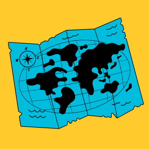
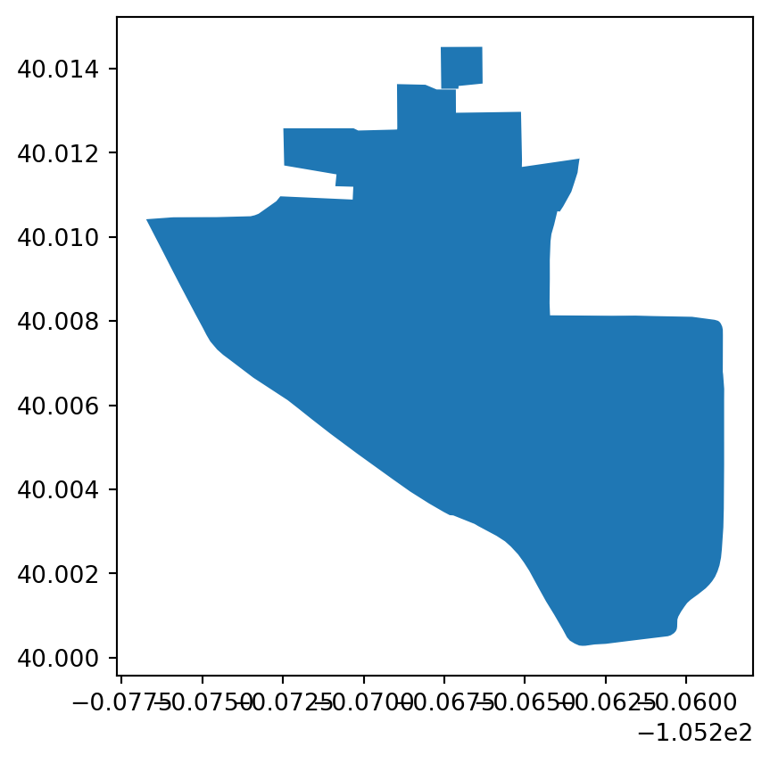

id = 'shortcourse'
address = 'University of Colorado Boulder, Boulder, CO, United States'
tag_key = 'amenity'
tag_value = 'university'
long_name = 'University of Colorado Boulder'
short_name = 'CU Boulder'
map_filename = 'cu-boulder.html'Add a map to your website
Get started with maps
As Earth and Environmental Data Scientists, we know places are important. In this activity, you will make your first map in Python, and use it to tell the story of where you come from and what places are important to you.
Learning Goals:
- Define geospatial vector data
- Search for geospatial features
- Construct a map and embed it into a portfolio website

Keywords
Vector Data, Cartography
Before we get started, let’s define some parameters in Python that we can use to change the workflow:
Get started with map-making using open-sources tools
VideoCheck out our demo video!
Check out our video demo for adding a map to your portfolio:
DEMO: Add a map to your portfolio by ESIIL
About Spatial Vector Data
Vector data are composed of discrete geometric locations (x and y values, or latitude and longitude) that define the “shape” of the spatial object. The organization of the vertices determines the type of vector that you are working with. There are three fundamental types of vector data:
Points: Each individual point is defined by a single x, y coordinate. Examples of point data include: sampling locations, the location of individual trees or the location of plots.
Lines: Lines are composed of many (at least 2) vertices, or points, that are connected. For instance, a road or a stream may be represented by a line. This line is composed of a series of segments, each bend in the road or stream represents a vertex that has defined x, y location.
Polygons: A polygon consists of 3 or more vertices that are connected and closed. Thus, the outlines of plot boundaries, lakes, oceans, and states or countries are often represented by polygons.

Tip
Read more about working with spatial data using Python in our Intro to Earth Data Science, here.
Open this activity in GitHub Codespaces
To complete this activity, you will need somewhere to run your code. Start by going to this repository on GitHub. We’ve set it up so that anyone can run Python code from there!
Once you are on the website, follow these instructions to get your Codespace up and running:
- Click on Use this Template in the upper right, and select Open in Codespace. This might take a minute if you haven’t done it in awhile.
- Once the Codespace loads, open
!00-first-map.ipynbusing theFolderstab on the left-hand side. - Continue working through the sample notebook. All the code should start off the same as what is on this page, but there’s more background information here if you want it.
- Once you are done, stop your Codespace so you don’t use up your allocation!
Finding locations and boundaries
Open Street Map (OSM) is an open-source, editable map of the world – a little like a wiki for places. They also provide a service for looking up locations using text, which we’ll be using in this activity.
STEP 0: Import Mapping packages
Python packages or libraries let you use code written by experts around the world. Because Python is open source, lots of different people and organizations can contribute (including you!). Many contributions are in the form of packages which do not come with a standard Python download.
ReadRead More: Packages need to be installed and imported.
Learn more about using Python packages. How do you find and use packages? What is the difference between installing and importing packages? When do you need to do each one? This article on Python packages will walk you through the basics.
TaskTry It
The cell below imports several packages you’ll need for this challenge. BUT there’s a problem! To fix it:
- Run the cell. What is the error, and what line is triggering it?
- Fix the typo that’s causing the error
- Run the cell again to make sure it’s working now
import geopandas as gpd # Work with vector data
import holoviews as hv # Save maps and plots to files
import hvpolt.pandas # Create interactive maps and plots
from osmnx import features as osm # Search for locations by nameSee our solution!
import geopandas as gpd # Work with vector data
import holoviews as hv # Save maps and plots to files
import hvplot.pandas # Create interactive maps and plots
from osmnx import features as osm # Search for locations by nameSTEP 1: Search for a point of interest
You can use the osmnx package to download and search for spatial vector data in your area, or anywhere around the world.
In this case, we’re looking for the location of the United Tribes Technical College campus in North Dakota. The address in here, 'United Tribes Technical College, Bismarck, ND, United States', does not have to be complete or exact, but it should be specific enough to narrow it down.
Tip
You can use the Open Street Maps website to fine-tune your address before you copy it into your code.
With the osmnx library, in addition to the address or place name you are using, you need to supply at least one tag. In this case, we are specifying that we want it to be tagged as a amenity of type university. You might have to try a couple different searches with different addresses and/or tags to get the address you want, just like if you are using a map website or app.
Tip
Check out the list of all the different amenity types available on Open Street Maps! Different amenity types might be different types of vector data, such as a point location or a building footprint polygon.
# Search for your site
boundary_gdf = osm.features_from_address(
address,
{tag_key: tag_value},
dist=1000)
boundary_gdf| geometry | amenity | boundary | internet_access | name | operator | short_name | website | wikidata | wikipedia | ele | gnis:feature_id | ||
|---|---|---|---|---|---|---|---|---|---|---|---|---|---|
| element | id | ||||||||||||
| way | 46226108 | POLYGON ((-105.27589 40.01047, -105.27597 40.0... | university | administrative | wlan | University of Colorado Boulder (Main Campus) | University of Colorado Boulder | CU Boulder | https://www.colorado.edu/ | Q736674 | en:University of Colorado Boulder | NaN | NaN |
| 391232001 | POLYGON ((-105.26632 40.01452, -105.26631 40.0... | university | NaN | NaN | Naropa University | Naropa University | NaN | NaN | Q2975783 | en:Naropa University | 1620 | 178660 |
boundary_gdf.plot()
We have a map of CU Boulder!
STEP 2: Create an interactive map
There are lots of different ways to create maps and plots in Python. Here, we’re going to use a tool called 'hvplot' and 'geoviews' to create an interactive map, including the online 'EsriImagery' tile source basemap.
# Plot boundary
osm_map = boundary_gdf.hvplot(
# Givethe map a descriptive title
title=long_name,
# Add a basemap
geo=True, tiles='EsriImagery',
# Change the colors
fill_color='white', fill_alpha=0.2,
line_color='skyblue', line_width=5,
# Change the image size
frame_width=400, frame_height=400)
# Save the map as a file to put on the web (OPTIONAL)
hv.save(osm_map, map_filename)
# Display the map
osm_mapWARNING:bokeh.core.validation.check:W-1005 (FIXED_SIZING_MODE): 'fixed' sizing mode requires width and height to be set: figure(id='p1080', ...)STEP 3: Download your map from Codespaces
If you are doing this activity on GitHub Codespaces or another cloud service, you will need to download the map you created:
- Open the
Folderstab on the left hand side - Right-click on
cu-boulder.html(or whatever you named your file) - Select
Download...
This should download your map.
STEP 4: Place your map in your webpage
You are now ready to upload your map to your portfolio repository and place it in your webpage. Because it is HTML and not an image, you will need to use the following HTML to get it on your page:
<embed type="text/html" src="cu-boulder.html" width="600" height="600">